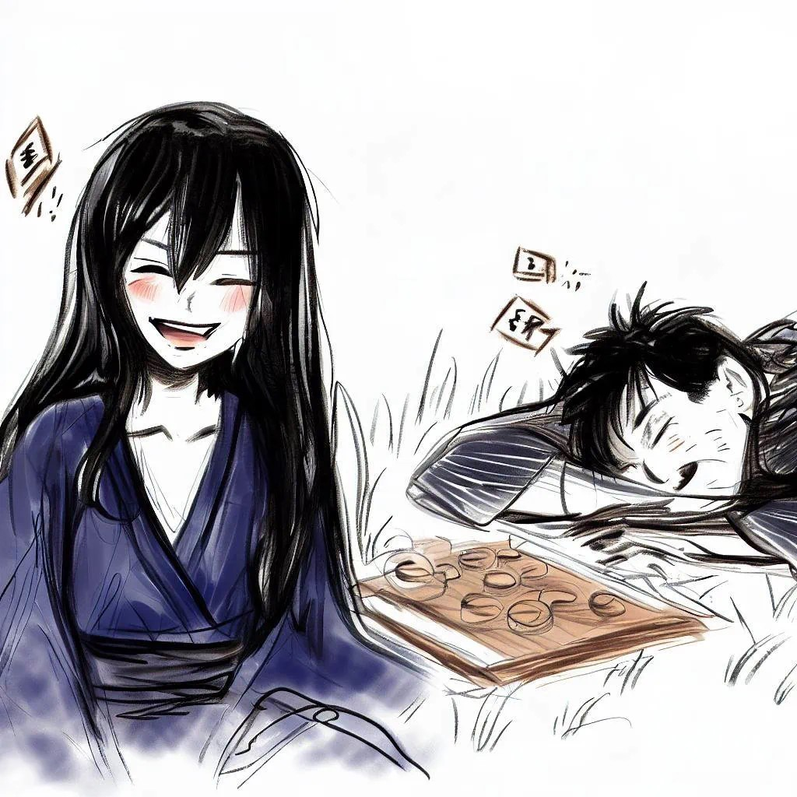
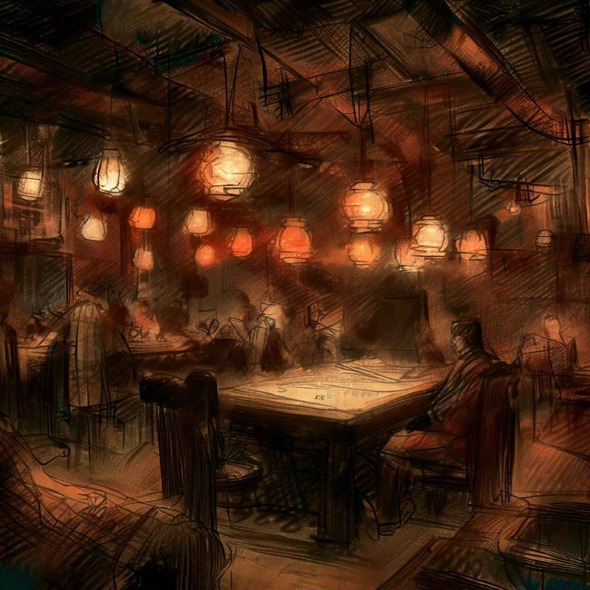
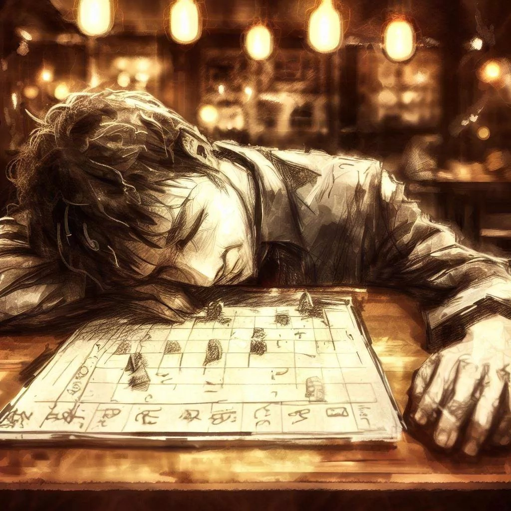
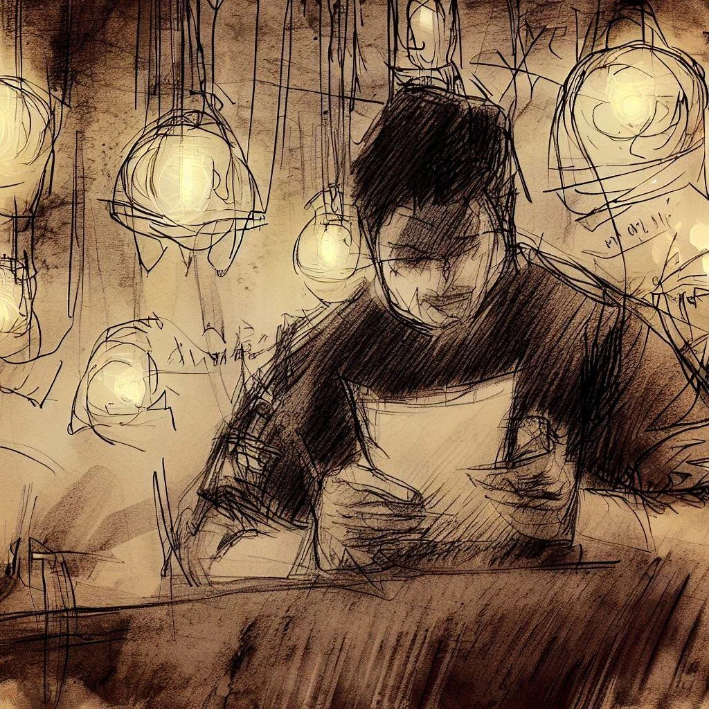

The greatest failure is not in losing the game, but in smiling without knowing that the game is already fixed.
Introduction
It is said that in Japan, in the Kansai region, when the full moon shines high in the sky, a creature with bewitching charms appears, seeking to lure lost passersby.
Beautiful and mysterious, Komayo seduces the unfortunate with her irresistible allure, insidiously suggesting a game of ogi, a variant of the traditional Japanese chess.
Those who accept her invitation find themselves swept into an elusive labyrinth of maneuvers and strategies.
However, as the game progresses, an insidious weariness takes hold of the players, clouding their judgment and seeping into their bones, inevitably leading them towards a sleep as deep as it is unchanging.
During this abyssal rest, Komayo reveals her true nature.
She drains their life energy, leaving behind only the empty echo of their former vitality.
The souls of these unfortunate victims are then transformed into yūrei, condemned to endless wandering.
Haunted by the captivating memory of Komayo and tormented by the vain hope of finishing their game of ogi, they wander eternally, prisoners of an unfinished quest and a fallen dream.

This narrative is the poignant testimony of one of them.
Preface
I would like to express my deep gratitude to Komayo, who introduced me to the fascinating game of ogi.
Her mysterious presence has left an indelible mark on my existence.
What I am about to recount is the story of our first encounter, a memory I hold dear.
Through these lines, I wish to share with you the event of that memorable night, where a simple game turned into a quest for discovery and spiritual awakening.
Prologue
In the comforting darkness of my office, the ticking of the clock seemed to stop time.
I was in a trance-like state, physically present but mentally elsewhere, a shadow among others, a specter in the impersonal machinery of the corporation.
My colleagues, reduced to distant silhouettes, busied themselves in a meaningless flurry of activity.
My eyes, absorbed by the abyss of the computer screen, reflected a virtual room inhabited by ghosts.
In this surreal digital theater, every word and gesture seemed inevitably predetermined.
We were reluctant actors, playing out a worn script, where authenticity had given way to a mechanical dance of formalities.
Suddenly, an unexpected shiver ran through my being.
A whisper in the air, an echo of a distant promise, awakened in me a desire to break the chains of monotony and escape from this spider web of pretense.
As if a crack had opened in the veil of reality, a secret passage to somewhere else, a breath of freedom in the stagnant air of the office.
The end-of-day melody, usually ignored, this time resonated with surprising clarity, pulling me out of my lethargy.
With a sudden burst of rebellion, I disconnected from the meeting.
My reflection in the turned-off screen showed a man surprised, almost a stranger to himself.
I'll let you finish, I declared, breaking the oppressive silence.
Around me, faces turned, marked with surprise and curiosity.
I stood up, freeing myself from the grip of daily routine, walking through the office as if in a lucid dream.
Each step echoed like a farewell to the old version of myself, to the man once imprisoned in a golden cage of conformity.
For the first time in a long time, I felt light, vibrating with excitement for the unknown that awaited me beyond these walls.
Nocturnal Glow at Tenjinbashi
It's just after 7 PM when I leave my office in the administrative district of Umeda.
Outside, the fresh December air welcomes me, a surprising but pleasant coolness.
The night wraps the city, but a bright and full Moon lights my path, weaving its way between skyscrapers.
With each step, I feel the lethargy of the day evaporating from my body.
I try to empty my mind, focusing on the present moment.
Ogimachi Park unfolds before me, a haven of peace in the heart of urban hustle.
The bare trees stand as dark silhouettes against a sky bathed in moonlight, their branches gently swaying in the night breeze.
As I head towards Tenjinbashi shopping street, I feel my spirit calming even more.
The atmosphere of the galleries, with their glittering pachinkos, buzzing arcades, welcoming restaurants, and eclectic shops, injects me with renewed energy.
This mix of lights, sounds, and human activity is invigorating.
I naturally slow down, captivated by the bustle around me.
That's when I arrive in front of the Bar de la Régence.
This place, both familiar and mysterious, is my weekly refuge.
Here, among chess enthusiasts, I find a simple but intense pleasure, a striking contrast to the complexity of my daily life.
From the Counter to the Game
As soon as I enter the Bar de la Régence, the comforting smell of old wood envelops me, while the soft, muted light bathes me.
The familiar sound of chess pieces clicking on boards resonates in the air, awakening a deep sense of well-being in me.

I make my way through the room, where chess players engage in silent duels.
Sitting at the bar, I give a discreet nod to the bartender, a connoisseur of my habits.
But my mind is already elsewhere, on the chess battlefield.
Tonight, I tell myself,
I will ignite the game with the fervor and audacity of Adolf Anderssen. My style will be offensive, sown with brilliant combinations. Each piece I sacrifice will mark another step towards a dazzling victory. It will be a spectacle of pure ingenuity and bravery, a strategic fireworks display, unfolded here on the chessboard.
However, my concentration is suddenly interrupted by a presence at my side.
A young woman of striking beauty is savoring a glass of wine.
Her deep blue kimono, in perfect harmony with her fair skin, and her black hair cascading in silky waves, captures the muted light, creating an enchanting contrast.
When she turns her head towards me, her enigmatic smile completely disarms me.
Her eyes, sparkling with a mischievous glint, capture all my attention, shaking my confidence.
The assurance I felt for my upcoming chess game vanishes, replaced by sudden intrigue and fascination.
Our exchange of glances intensifies, a silent dialogue establishing between us.
I try not to let my emotions show, and in an elegant gesture, I raise my glass in her direction.
She responds with a calm and gentleness that surprises me, and we begin to converse.
She combines refinement with approachability, her conversation oscillating between confidence and charm.
There's a subtle naivety about her that only accentuates her appeal.
I am usually a man of character, frank and direct, but in her presence, a new facet of my personality seems to awaken, marked by an unprecedented fascination.
On a whim, I propose a game of chess to the young stranger.
She seems a bit hesitant and, with a shy smile, declines my offer.
I only play shogi, she whispers, an amused glint in her eyes slightly veiled by alcohol.
I almost thought I was in a shogi bar. It would be funny to see my shogi pieces on a chessboard, wouldn't it?
Her laugh, a bit too loud, reveals her state, but she remains reserved.
With kindness, I respond with a smile, trying to make her feel comfortable.
That would have been an interesting scene, certainly, I say softly.
Maybe the shogi pieces would do well on a chessboard. A mix of strategies could be a surprising experience.
She gives me a grateful look for my understanding.
Do you really think so? It would certainly be a fun spectacle! she says, her laughter softening.
Then, animated by a sudden boldness, she stands up and invites me to follow her to a game table.
Slightly surprised by this impromptu invitation, I rise and follow her, driven by a feeling of benevolence and curiosity, ready to explore this unusual game.
The Game of Contrasts
We take a seat at a discreet table, adorned with a chessboard and its box of pieces.
The young woman, in a fluid and elegant motion, pushes back her long hair, releasing a sweet and captivating fragrance.
Her perfume is a delicate blend, reminiscent of both the freshness of a nocturnal breeze and the tender fragrance of a rose garden.
She slips her hand into her kimono and carefully extracts a small fabric pouch.
With natural grace, she gently spills its contents onto the table, revealing a set of wooden shogi pieces, slightly trapezoidal in shape and engraved with kanji, which she arranges on her side of the chessboard.
I am fascinated, realizing she intends to challenge me in chess with these shogi pieces.
This unexpected fusion of two traditional games is both surprising and captivating.
With a mischievous smile, she asks:
Would you like to start with the white pieces?
Her face lights up with a playful and inviting glow.
With a sense of renewed gratitude, I begin to arrange my white pieces on the chessboard.
Each movement is executed with meticulous attention, revealing deep concentration.
I start by positioning my key pieces – my king and queen – with particular care, then I methodically set up my pawns.
This way of arranging my pieces is a ritual for me, performed with precision indicative of my respect for the game.
Watching from the corner of my eye, I see her carefully and attentively place her shogi pieces.
Initially, she positions a lance in each corner of the board, closely followed by a knight and then a silver general.
Then, gently, she picks up a special piece, marked with the kanji 妃, and places it at d8, directly opposing my queen.
On the second line, she strategically sets up a rook on her princess's flank and a bishop on her king's flank.
Finally, she meticulously aligns her eight pawns on the third row.
There is something captivating about the way she handles her pieces.
She twirls them between her nimble fingers before placing them on the board, each movement producing a crisp and distinct sound that resonates quietly in the air.
The pieces are now set up on the chessboard, creating a tableau both familiar and unusual.
I examine the arrangement carefully, trying to predict the opening moves.
As an experienced shogi player, I find this variation particularly novel and captivating.
To dispel my doubts, I decide to ask a few questions.
May I know against which variant I have the honor of playing? I ask, a courteous smile betraying my curiosity.
She tilts her head slightly, a mischievous glint lighting up her eyes.
Your game is the king of games, isn't it? she asks, a rhetorical edge to her voice.
Then, with a sly smile forming on her lips, she adds in a soft and captivating voice:
This one is the game of kings, also known as ogi.
The subtlety and depth of her voice wrap her words, cloaking them in a veil of mystery and seductive charm.
Speaking of kings, I see that yours is well accompanied. Could you tell me about that piece, by its side? I ask, pointing.
She answers with an enigmatic smile.
That's the Princess, a fascinating blend of the bishop and knight of your chess. And, once promoted, she acquires the king's movements.
I nod, impressed by the intricacy of this fusion.
And regarding captured pieces, can they be reintegrated into the game, as in shogi?
Absolutely, she confirms, her voice imbued with confidence.
The rules of shogi remain in effect.
One last question crosses my mind.
But isn't there a risk of imbalance in the game, if my most powerful pieces turn against me?
She shakes her head, her black hair waving with the rhythm of her movement.
No, because each captured piece reverts to its original form before being transformed into a shogi piece. It's a subtle balance.
I frown slightly, betrayed by my intrigue.
I'm not quite sure I understand. For example, if you capture one of my rooks...
Your captured rook would revert to a simple pawn, before being converted into a shogi piece and added to my game,
she explains patiently, her voice filled with clarity.
I ponder for a moment.
But why should a rook turn back into a pawn?
She looks at me with understanding, a smile lighting up her face, signaling shared comprehension.
Just as a pawn, when promoted in chess, can turn into a queen, a rook, a bishop, or a knight, when captured, it reverts to its original form,
she explains, her words floating in the air between us like a delightful enigma.
Her answer opens a new dimension in our game, sharpening my interest further.
This blend of complexity and creativity promises a fascinating experience.
Her way of explaining, combining playfulness and precision, gives this unique challenge a special allure.
The Game of the Night
In this moment of calm before the storm of the game, I deeply focus.
I feel a serenity within me that transcends the mere act of playing.
I open the game by moving my king's pawn to e4.
This move is not just strategic; it's an invitation to a dynamic game, a call to the tactical and spectacular dance of the chess pieces.
I lift my eyes to my young opponent, capturing her gaze.
In her eyes, I seek to decipher the subtleties of her strategy, to pierce the thoughts hidden behind her impassive face.
It's a moment of silent connection, where each heartbeat seems in harmony with the movements on the chessboard.
She responds with a symmetrical movement, advancing her pawn to e5, in perfect resonance with my opening.
Excitement builds within me, a tangible anticipation takes hold of my mind.
The game comes to life, each move opening the path to new possibilities, to new paths to explore.
In this opening, I feel something more significant than the game of chess itself.
Each move, each decision, becomes an act of meditation, a journey towards a deeper understanding.
It seems to me that, through this game, I am touching a fundamental essence, a truth that goes beyond the pieces and the board, a truth that resides in the harmony of movement and thought.
In this meditative state, I internally turn to Caïssa, the goddess of chess, seeking her wisdom and guidance.
She becomes a silent presence beside me, embodying the beauty and elegance inherent in every game of chess.
As the game progresses, I feel that each of my moves becomes a tribute to her essence, a dance with the divinity itself.
The game reaches its climax.
Each move becomes more thoughtful, imbued with a deep meaning that transcends pure strategy.
A growing connection with each piece, each square of the board, is felt, as if they belonged to a larger universe where I have my place.
Caïssa, with her timeless grace, seems to guide my hands, influencing every choice, every maneuver.
Then, in an almost unconscious movement, I gently lean towards the chessboard.
My head rests delicately on the smooth wood, my eyes slowly closing.
A remarkable moment occurs: a deep peace envelops me, a serenity that transcends all understanding.
It's as if all the conflicts, all the quests of life, find their answer in this simple contact between my forehead and the chessboard.
I realize that this is not just a game, but a reflection of life itself, with its challenges and surprises.
By laying my head on the chessboard, I surrender to this enlightenment.
I feel in harmony with everything, in a state of spiritual awakening.
It's a moment of pure consciousness, of unparalleled beauty, where I touch the very essence of existence.
The Echoes of Dawn
Time seemed to have dissolved, carried away by the shadows enveloping my consciousness.
I was floating in a soft and silent veil, my mind struggling to resurface to reality.

Like a ship emerging from darkness, I finally find my way back to the emerging light of morning.
My eyes slowly open to a room bathed in the soft light of dawn.
The chessboard, still, remains the silent witness of our nocturnal duel.
The seat of my opponent is empty, her mysterious aura having vanished with the arrival of the day, just like her ogi pieces.
Her absence leaves an unfathomable void, weighing down the atmosphere, making the room eerily quiet.
My gaze is captured by a neatly folded piece of paper near the chessboard.
With a feeling of reverence, I pick it up.
On the paper, a single word, Thank you, followed by a first name – Komayo.
The signature is elegant, a fleeting yet poignant reminder of that ephemeral encounter at the Bar de la Régence, a night spent playing chess with the enigmatic and fascinating Komayo.

Quiet Departure
Dawn begins to paint the sky a pale blue, forming a striking contrast with the black velvet of the night passed.
The moon, once a solitary and mysterious beacon, gently fades, its brilliance eclipsed by the growing light of day.
Osaka, still numb with sleep, welcomes me in its soothing silence as I leave the bar.
The streets, usually vibrant with life, are surprisingly calm, their nocturnal inhabitants yielding to the serenity of dawn.
The artificial lights of the night gradually dim, giving way to the soft hues of sunrise.
Only a few signs of life, like the rhythmic sweep of a broom or the distant rumble of a delivery truck, break this morning tranquility.
Memories of the night, of laughter and secrets shared around the chessboard, echo within me as a bittersweet symphony.
I feel transformed, marked by an experience that I still struggle to fully grasp.
The world around me seems both familiar and strangely new, as if I had cracked open the veil of reality.
The morning breeze, which once caressed my skin, reminds me of Komayo's ephemeral presence.
The taste of sake lingers, mixing with memories of the night – the complex aromas of the game, the warmth of exchanges, the spice of the unknown.
Wandering through the deserted streets, I feel a mix of melancholy and indescribable hope.
A chapter of my life has closed without my realizing it, and another, unexplored, begins to unfold.
Imbued with the memory of Komayo and our unfinished chess game, I am unaware that I have crossed an invisible line, succumbed to temptation.
A bittersweet feeling blends with my desire to see her again.
In the heart of the night, I simply believe I am returning home, oblivious to the fact that I have embarked on a much deeper journey, an intangible quest to find Komayo again, to finish our duel, and perhaps, to discover an unexpected form of redemption.